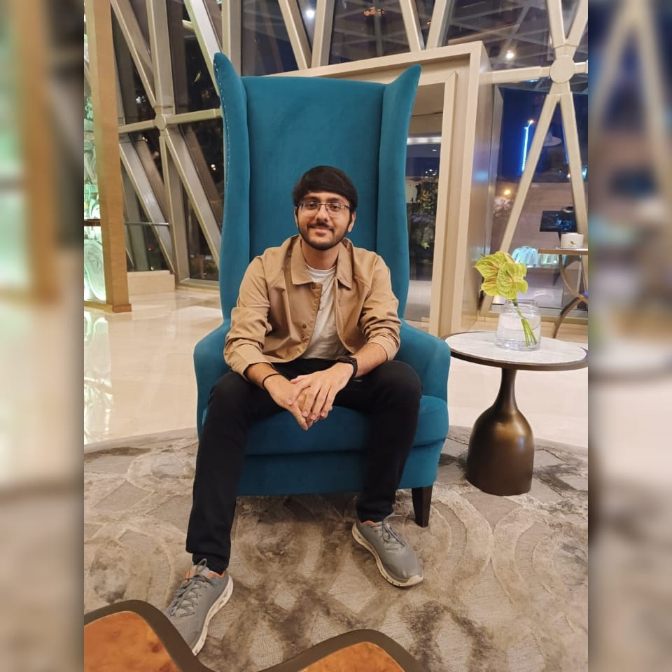

 I hail from the vibrant city of Kolkata, West Bengal, a place rich in culture, heritage, and history. Known as the "City of Joy", Kolkata has deeply influenced my outlook on life, instilling in me a love for art, literature, and diverse traditions. Beyond my roots, I am an avid traveler with an insatiable thirst for exploring the world. Having already ventured into over 25 countries, I am captivated by the sheer diversity of cultures, cuisines, and landscapes this planet offers.
In my free time, I immerse myself in a variety of hobbies that keep me engaged and inspired. Whether it's diving into the pages of a captivating novel, perfecting my shots on the football field, experimenting with new recipes in the kitchen, or coding exciting projects, I always find ways to keep my curiosity alive.
I am a die-hard supporter of the Liverpool Football Club, and cheering for my favorite team fills me with unparalleled excitement and pride. When it comes to books, I have a particular fondness for the mystery genre, which never fails to keep me on the edge of my seat, closely followed by the enchanting worlds of medieval fantasy.
Currently, I am a sophomore pursuing a BTech degree in Computer Science Engineering at the prestigious Vellore Institute of Technology. The institute's dynamic environment and rigorous academic framework have fueled my passion for technology, particularly in the field of cybersecurity.
My fascination with cybersecurity stems from its critical importance in today's interconnected world and its potential to safeguard individuals and organizations from digital threats.